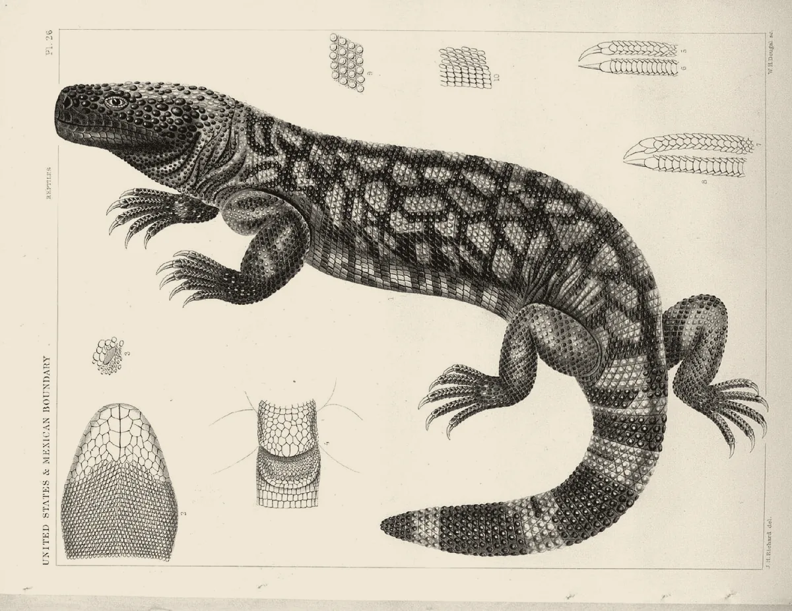

· Edición 64 · 4 min de lectura
En India, las copias del Ozempic cuestan desde 14 dólares al mes

En India, las copias del Ozempic cuestan desde 14 dólares al mes
Ver todo el tema, de principio a fin →
En pocas palabras. Este año venció en India y Brasil la patente de la semaglutida, la sustancia del Ozempic, y allá sus copias cuestan desde 14 dólares al mes o cerca de la mitad que la marca. Eso puede volver masivo un tratamiento que funciona contra la obesidad y la diabetes, cuando The Lancet proyecta que en 2050 seis de cada diez adultos del mundo tendrán exceso de peso. En Colombia, Novo Nordisk nunca pidió la patente, según Asuntos Legales, pero no encontramos copias aprobadas por el Invima: ni patente que lo impida ni copia a la vista.
El dato curioso. En 1992, John Eng, médico del hospital de veteranos del Bronx, en Nueva York, sacó del veneno del monstruo de Gila, el lagarto del grabado, una molécula que imita una hormona del intestino y baja el azúcar en la sangre. El hospital no quiso patentarla; Eng la tramitó él mismo. En 2005 se aprobó como exenatida. La semaglutida, su pariente, la diseñó Novo Nordisk a partir de la hormona humana.
¿Qué está cambiando? El lunes 9 de noviembre llegó a las farmacias de Brasil Owozy, una pluma semanal de semaglutida, desde 349 reales con descuento. Es una de varias copias desde que venció la patente, en marzo: la primera salió en junio a unos 450 a 500 reales, cuando el Ozempic de menor dosis costaba unos 900.
En India, el 20 de marzo, Natco lanzó su copia a 1.290 rupias al mes, unos 14 dólares; el Wegovy, la marca para obesidad, costaba 10.480. Once días después, Novo Nordisk volvió a descubrir que podía bajar sus precios: hasta 48%.
Fuente: The Lancet, Global Burden of Disease 2021 (marzo de 2025)
Ver datos
| millones | |
|---|---|
| 1990 | 731 |
| 2021 | 2.110 |
| 2050 (proyección) | 3.800 |
Lo que cambia en 10 a 50 años: la obesidad y la diabetes, que crecen desde hace tres décadas, tendrían un tratamiento eficaz al precio de un medicamento común. Los adultos con diabetes pasarían de 589 millones en 2024 a 853 millones en 2050, según la Federación Internacional de Diabetes.
¿Por qué?
- Funciona. En un ensayo con unos 17.600 adultos con obesidad y enfermedad del corazón, bajó 20% los infartos, derrames y muertes cardiovasculares. Lo pagó Novo Nordisk.
- Es barata de hacer. Un mes costaría unos 3 dólares de fabricar, según un estudio preliminar del Imperial College de Londres.
¿Qué significa para Colombia?
- Sin patente. Novo Nordisk no la pidió aquí, según Asuntos Legales.
- Sin copias. Solo hallamos registros del Invima a nombre de Novo Nordisk: Ozempic y Wegovy. Varios productos de redes sociales no tienen registro, advirtió el Invima.
- Sin báscula. Unos 26 de cada 100 adultos tienen obesidad, estima el Atlas Mundial de la Obesidad. La última encuesta nacional de nutrición publicada es de 2015: el país discute el precio de la pluma sin haber vuelto a pesar a sus adultos.
¿Quién se está preparando? India y Brasil fabrican copias, y Dr. Reddy's anunció que quería venderla en 87 países. La OMS propone compras conjuntas: calcula que, aun produciendo mucho más, en 2030 llegaría a menos de 10 de cada 100 personas que podrían beneficiarse.
Pero ojo.
- No es por un rato. Al dejarla, el peso vuelve en cerca de año y medio, según una revisión en The BMJ. Por eso pesa el precio.
- Para diabetes. Varias copias solo están aprobadas para diabetes tipo 2.
Lo que ya habíamos contado. El 2 de noviembre contamos el impuesto a las bebidas azucaradas, para prevenir la obesidad (ver esa edición), y el 5, un genérico contra el VIH que dejó por fuera a Colombia (ver esa edición). Hoy, el tratamiento.
Qué hacer con esto
Para ir pensando. Quien los use los necesitará por años: pesará más el precio de una copia legal que el de la primera pluma.
Cómo prepararse. Comprar solo con fórmula y en droguerías autorizadas; el registro se consulta en el Invima.
Ojo con el cuento. «Ozempic genérico, envío inmediato.» Sin fórmula ni registro del Invima, no es un genérico: es un riesgo.
Dos lecturas
Las dos posturas sobre el tema, en su mejor versión
Abrirles la puerta pronto. Si fabricarla cuesta unos dólares y aquí no hay patente, el Invima debería priorizar las copias: cada año de espera deja el mercado a la marca y a los vendedores ilegales.
Ir despacio. Es un tratamiento de por vida, con efectos de largo plazo aún poco estudiados. Antes de abaratarlo hay que definir quién lo necesita de verdad y cómo se vigila la calidad de cada copia.
Quién decide y cuándo
Quién decide. El Invima, que registra cada copia, y el Ministerio de Salud, que puede fijar precios máximos y define qué paga el sistema.
Cuándo. Sin fecha: no hallamos solicitudes de registro.
Cómo participar. Un derecho de petición al Invima puede preguntar si hay registros de semaglutida en trámite. (Conocimiento general.)
La paradoja del día
Lo más absurdo de la edición, en dos líneas
El primer medicamento de esta familia salió del veneno de un lagarto del desierto. Tres décadas después, fabricar un mes del más famoso costaría unos 3 dólares, y lo difícil ya no es la ciencia: es la droguería.
Para conversar
La pregunta. Si un tratamiento contra la obesidad costara 14 dólares al mes, ¿debería pagarlo el sistema de salud a todos o solo a los de mayor riesgo?
Para leer más
Libros para seguir con el tema
Adelgazar a cualquier precio, de Johann Hari (Península, 2024; traducción de Juanjo Estrella). Un periodista que usó Ozempic recorre laboratorios y consultorios para entender qué prometen estos medicamentos, qué riesgos traen y qué dicen de cómo comemos.
¿Le interesa ver las fuentes?
Todos los documentos y datos que usamos
41 fuentes: 6 académicas, 6 oficiales, 4 de organizaciones, 22 de prensa, 3 de referencia.
- Prensa Tribuna do Sertão (9 de noviembre de 2026). Caneta de semaglutida Owozy já está à venda no Brasil por a partir de BRL 349
- Prensa Folha de Pernambuco (noviembre de 2026). Caneta de semaglutida Owozy começa a ser vendida no Brasil a partir de BRL 349
- Prensa Indian Pharma Post (5 de noviembre de 2026). Dr. Reddy's receives Brazil approval for generic Semaglutide injection
- Prensa BioSpectrum India (noviembre de 2026). Dr. Reddy's receives marketing authorisation for generic semaglutide injection in Brazil
- Prensa Band (15 de junio de 2026). Ozivy: caneta emagrecedora brasileira começa a ser vendida; veja preço
- Prensa Campo Grande News (junio de 2026). Nova caneta emagrecedora atrasa nas farmácias, mas preço começa em BRL 452,75
- Prensa BP Money (2026). Ozivy: Anvisa define preço máximo e caneta nacional para diabetes e obesidade se aproxima das farmácias
- Prensa Bloomberg Law (20 de marzo de 2026). Ozempic Copies at USD 14 in India as Novo Patent Expires
- Prensa Business Today (20 de marzo de 2026). NATCO opens semaglutide market at ₹1,290, sets early price benchmark
- Prensa Business Today (31 de marzo de 2026). Novo further cuts semaglutide prices as generics enter India
- Prensa Invezz (31 de marzo de 2026). Novo Nordisk cuts Ozempic, Wegovy prices in India again
- Académica Instituto de Métricas y Evaluación de la Salud (IHME), comunicado sobre un estudio de The Lancet (3 de marzo de 2025). The Lancet: More than half of adults and a third of children and adolescents predicted to have overweight or obesity by 2050
- Académica The Lancet, estudio de pronóstico del Global Burden of Disease 2021 (marzo de 2025). Global, regional, and national prevalence of adult overweight and obesity, 1990–2021, with forecasts to 2050
- Organización Federación Internacional de Diabetes (abril de 2025). Over 250 million people worldwide unaware they have diabetes, according to new IDF research (Atlas de la Diabetes, 11.ª edición)
- Oficial Organización Mundial de la Salud (1 de diciembre de 2025). WHO issues global guideline on the use of GLP-1 medicines in treating obesity
- Oficial Organización Panamericana de la Salud (1 de diciembre de 2025). WHO issues global guideline on the use of GLP-1 medicines in treating obesity
- Académica The New England Journal of Medicine, ensayo SELECT (11 de noviembre de 2023). Semaglutide and Cardiovascular Outcomes in Obesity without Diabetes
- Prensa Science News (noviembre de 2023). The weight-loss drug Wegovy lowered heart attack risk in a large trial
- Académica Universidad de Oxford, sobre una revisión sistemática publicada en The BMJ (8 de enero de 2026). New study finds stopping weight loss drugs linked to faster regain than ending diet programmes
- Académica medRxiv, estudio preliminar sin revisión de pares (marzo de 2026). How Low Could Semaglutide Prices Fall? An Analysis of Production Cost and Implications for Global Access Ahead of Patent Expiry
- Académica PubMed Central, versión del mismo estudio. How Low Could Semaglutide Prices Fall? An Analysis of Production Cost and Implications for Global Access
- Prensa ScienceAlert, con la agencia AFP (marzo de 2026). Generic Ozempic could cost less than USD 3 a month, study finds
- Prensa Dawn, con la agencia AFP (marzo de 2026). Anti-obesity drug could cost just USD 3 per month: study
- Prensa Asuntos Legales, columna de Tatiana López Romero (11 de julio de 2026). Ozempic: el fin de una era
- Prensa Portafolio (2026). ¿Bajará el precio de Ozempic en Colombia? Esto pasará tras el fin de patentes
- Oficial Invima, alerta sanitaria 090 de 2024. Alerta sanitaria sobre comercialización fraudulenta de Semaglutida + Vitamina B12
- Prensa El Colombiano (2025). ¿Para qué están aprobados Wegovy, Ozempic y Mounjaro en Colombia según el Invima?
- Oficial Invima, sala de prensa (junio de 2026). El Invima alerta por aumento de productos fraudulentos para bajar de peso comercializados en redes sociales
- Prensa Cambio (junio de 2026). Invima alerta por productos fraudulentos para bajar de peso vendidos en redes sociales
- Prensa Forbes Colombia, con el World Obesity Atlas 2025 (4 de marzo de 2025). El 26 % de los adultos colombianos sufre de obesidad, según el World Obesity Atlas 2025
- Organización Federación Mundial de Obesidad (marzo de 2025). World Obesity Atlas 2025: Majority of countries unprepared for rising obesity level
- Prensa Diario del Sur (2026). Qué es la ENSIN y por qué es clave para Colombia
- Oficial Ministerio de Salud, aviso de convocatoria (26 de mayo de 2026). Aviso de convocatoria, Ley 80: recolección y procesamiento de la Encuesta Nacional de Situación Nutricional (ENSIN)
- Prensa Bloomberg Law (julio de 2025). Dr Reddy's Plans to Launch Generic Semaglutide in 87 Countries
- Prensa Military.com, sobre la investigación del Departamento de Asuntos de Veteranos. From Lizard Venom to Ozempic: How VA Research Changed Medicine
- Organización Biotech Academy (Dinamarca). Case 3: The Gila lizard and the story behind Byetta
- Organización Fundación Lasker (2024). GLP-1-based therapy for obesity: Joel Habener, Svetlana Mojsov, Lotte Bjerre Knudsen
- Oficial Naciones Unidas, Biblioteca Digital. Resolución A/RES/61/225: Día Mundial de la Diabetes (20 de diciembre de 2006)
- Referencia Internet Archive. Report on the United States and Mexican Boundary Survey, volumen de zoología (reptiles de la frontera, de Spencer F. Baird)
- Referencia Planeta de Libros (ficha del libro). Adelgazar a cualquier precio, de Johann Hari (Península)
- Referencia Marcial Pons (ficha del libro). Adelgazar a cualquier precio
Glosario
Las palabras técnicas, explicadas
- Semaglutida: la sustancia de Ozempic y Wegovy. Imita una hormona del intestino que ayuda a controlar el azúcar y quita el hambre.
- GLP-1: esa hormona; da nombre a la familia de medicamentos.
- Patente: derecho a ser el único que fabrica y vende un invento durante unos años. Cuando vence, otros pueden copiarlo.
- Copia o genérico: medicamento con el mismo principio activo que el original, que una autoridad aprueba tras comprobar que funciona igual.
- Registro sanitario: el permiso del Invima para vender un medicamento en Colombia.
- Invima: Instituto Nacional de Vigilancia de Medicamentos y Alimentos, la entidad que autoriza los medicamentos.
- Exceso de peso: sobrepeso más obesidad. La obesidad se mide con un índice de masa corporal de 30 o más.
- Estudio preliminar: trabajo que se publica antes de que otros científicos lo revisen.
Nota metodológica
Cómo se hizo esta edición y qué no pudimos verificar
El horizonte. ¿Cambia el rumbo de cómo vive la gente, en Colombia o en el mundo, dentro de 10 a 50 años? Sí. En ese plazo, la obesidad y la diabetes, que crecen desde hace tres décadas, podrían tener por primera vez un tratamiento eficaz al alcance de cientos de millones de personas, porque la semaglutida deja de tener dueño en buena parte del mundo. La evidencia: la serie de The Lancet (731 millones de adultos con sobrepeso u obesidad en 1990, 2.110 millones en 2021 y 3.800 millones proyectados para 2050), la proyección de la Federación Internacional de Diabetes a 2050, el ensayo SELECT y el cálculo de la OMS sobre el acceso a 2030.
Entra por la puerta del cambio de fondo: hay una serie larga y proyecciones institucionales; un canal concreto con Colombia (la obesidad de sus adultos, la falta de patente y el registro en el Invima), y algo que se puede preparar ahora (no caer en productos sin registro y vigilar si el Invima aprueba copias). La puerta de entrada es la llegada de Owozy a las farmacias de Brasil, el 9 de noviembre, y la aprobación de la copia de Dr. Reddy's, el 5; el Día Mundial de la Diabetes es el sábado. Es también un tema del mundo y de ciencia y medicina. Tras un lunes de clima y un martes de energía, diversifica la semana, pero lo elegimos por puntaje.
Revisamos el archivo: la semaglutida genérica solo apareció en «Lo que descartamos» el 23 y el 31 de octubre y el 3 y el 4 de noviembre, sin un hecho reciente. Lo enlazamos con el impuesto a las bebidas azucaradas (2 de noviembre), que trató la prevención de la obesidad, y con el genérico del lenacapavir (5 de noviembre), que trató las patentes y el acceso; lo nuevo es un tratamiento que ya se vende barato en otros países y que en Colombia no tiene patente.
Puntaje. De 1 a 3 en cada criterio; peso en la vida y horizonte valen doble (máximo 24). Solo entra un tema con horizonte 3.
| Tema | Puerta | ¿Cambia el rumbo en 10 a 50 años? | Alcance | Peso | Horizonte | Cercanía | Margen | Mirada | Total | Resultado |
|---|---|---|---|---|---|---|---|---|---|---|
| Copias de la semaglutida tras el fin de la patente (mundo y Colombia) | fondo | Sí: un tratamiento contra la obesidad y la diabetes al alcance de cientos de millones | 3 | 3 | 3 | 2 | 2 | 3 | 22 | Elegido (edición 64) |
| Desplazamiento por el clima (Ley 2577) | fondo | Sí: quién tendrá que mudarse y con qué protección | 2 | 3 | 3 | 3 | 2 | 3 | 22 | Sin hecho nuevo |
| Diez años del Acuerdo de Paz: la tierra para el campo | nudo | Sí: quién es dueño de la tierra y cómo se vive en el campo por décadas | 3 | 3 | 3 | 3 | 2 | 1 | 21 | Aniversario el 24; cifras que no coinciden |
| Primera línea del metro de Bogotá | fondo | Sí: cómo se moverá la ciudad por décadas | 2 | 2 | 3 | 3 | 1 | 1 | 17 | Sin hecho nuevo |
| Modelos y pérdidas de las empresas de inteligencia artificial (mundo) | fondo | Sí: la tecnología que cambia el trabajo y la información | 3 | 2 | 3 | 1 | 1 | 1 | 16 | En todas las portadas; sin canal claro |
| Perspectivas de cosechas de la FAO (mundo) | fondo | No: hambre por conflictos y El Niño, un episodio | 3 | 3 | 2 | 1 | 1 | 2 | 17 | No pasa el horizonte |
| Préstamo con el FMI y recorte del gasto | nudo | No: una decisión fiscal de coyuntura | 3 | 2 | 1 | 3 | 2 | 1 | 15 | No pasa el horizonte |
En el tema elegido, el peso vale 3 porque toca la salud y la vida: el ensayo SELECT encontró menos infartos y muertes cardiovasculares. La cercanía vale 2: el canal con Colombia es real (la obesidad de uno de cada cuatro adultos, la falta de patente, el mercado ilegal), pero las copias aún no llegan. El margen vale 2 porque no hay una decisión con fecha, aunque sí algo que preparar. La mirada vale 3: la prensa cuenta los lanzamientos en Brasil e India, pero casi nadie explica qué significan para Colombia. El desplazamiento por el clima empata, pero sigue sin un hecho reciente, que es condición para entrar. Ningún otro tema llega a 19 con un hecho nuevo, así que hoy hay una sola edición.
Hicimos unas 60 búsquedas en español, inglés y portugués. No pudimos abrir los documentos completos, tampoco el estudio de The Lancet, el del costo de producción ni la columna de Asuntos Legales; trabajamos con resúmenes, comunicados y resultados de búsqueda. De 41 fuentes, 19 no son de prensa.
Quedó sin verificar o con límites:
- Que Novo Nordisk nunca pidió la patente de la semaglutida en Colombia lo dice la columna de Asuntos Legales (julio de 2026); no lo confirmamos en la Superintendencia de Industria y Comercio. La misma columna advierte que otras patentes, de fórmula o de dispositivo, pueden extender la exclusividad hasta 2032; no sabemos si alguna rige aquí. El estudio del costo no nombra a Colombia entre los 150 países sin solicitudes en lo que pudimos leer; varias notas dan 150, 160 o 162 países según la versión.
- Que no hay copias registradas en Colombia se basa en que no encontramos ninguna: la alerta del Invima de 2024 decía que había un solo registro de semaglutida, el de Ozempic, y luego se registró Wegovy. No consultamos la base de registros del Invima. Un blog comercial dice que en octubre ninguno de los dos aparecía vigente; otras fuentes lo contradicen.
- Los precios de Brasil varían según la dosis, el estado y las promociones. Los 349 reales de Owozy son por pluma al comprar tres, para inscritos en un programa de la distribuidora, Biolab; sin él, las notas dan de 443 a 488 reales. Los de la copia de EMS (Ozivy) van de 452 a 498 reales, y los unos 900 del Ozempic de menor dosis son de BP Money; el precio máximo oficial es más alto. Por eso escribimos «cerca de la mitad».
- Los 1.290 rupias de Natco son por frasco de varias dosis; su pluma costaría de 4.000 a 4.500. Los 10.480 del Wegovy y los 14 dólares son de Bloomberg. Algunas notas dicen que otras marcas costaban 750 rupias por semana y otras, por mes. El recorte de Novo de hasta 48% fue en Wegovy; en Ozempic fue de hasta 36%.
- El costo de unos 3 dólares al mes es un cálculo de un estudio preliminar, sin revisión de pares, de investigadores del Imperial College de Londres y de la Universidad del Witwatersrand; con la pluma, el costo sube.
- El «cerca de año y medio» es de la Universidad de Oxford para los medicamentos más nuevos; otros resúmenes de la misma revisión dan 1,4 o 1,7 años, y los autores advierten que hay pocos estudios largos.
- El ensayo SELECT incluyó 17.604 adultos de 45 años o más, sin diabetes; el 20% se refiere a la suma de infartos, derrames y muertes cardiovasculares.
- El 26 de cada 100 adultos con obesidad es una estimación del Atlas Mundial de la Obesidad 2025, no una medición: la última encuesta nacional, la Ensin 2015, daba 18,7 de cada 100 con obesidad y 56,4 con exceso de peso entre los 18 y los 64 años. Que la Ensin debía actualizarse en 2020 y luego en 2025 lo dicen una columna de La Silla Vacía y Diario del Sur; en mayo de 2026 el Ministerio de Salud convocaba la recolección de la nueva.
- La historia de John Eng viene de fuentes de divulgación, no del artículo original; el año de aprobación de la exenatida (2005) es de la FDA de Estados Unidos.
- Varias copias de Brasil (Owozy, Semaclique, la de Dr. Reddy's) e India (la de Natco) están aprobadas para diabetes tipo 2; en India hay también marcas para control de peso.
El grabado es la lámina 26 de los reptiles del informe de la Comisión de Límites entre Estados Unidos y México, que dirigió Spencer F. Baird; lleva las firmas del dibujante J. H. Richard y del grabador W. H. Dougal. La tomamos de Wikimedia Commons, donde un usuario la subió con licencia CC BY-SA 4.0 y la fecha en 1857; las bibliografías ubican el volumen en 1859, que es la fecha que usamos. La bajamos al primer intento.
El libro: no está en Santo & Seña (buscamos en su catálogo), así que va sin enlace. Autor, editorial, año y traductor los tomamos de las fichas de Planeta y Marcial Pons. Buscamos un segundo libro, La epidemia de los ultraprocesados, de Chris van Tulleken (Urano), pero no pudimos confirmar el año de la edición en español.